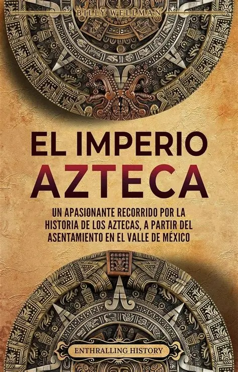

El Imperio Azteca fue una de las civilizaciones más importantes de Mesoamérica. Los mexicas fundaron la ciudad de Tenochtitlan alrededor del año 1325, en una isla del lago de Texcoco. Con el paso del tiempo, lograron expandir su territorio mediante alianzas, comercio y conquistas militares. La sociedad azteca estaba organizada en diferentes grupos, entre ellos los gobernantes, sacerdotes, guerreros, comerciantes y agricultores. Desarrollaron grandes conocimientos en agricultura, arquitectura, astronomía y matemáticas. También construyeron impresionantes templos y calzadas en Tenochtitlan. El Imperio Azteca llegó a su fin en 1521 con la conquista española dirigida por Hernán Cortés y sus aliados indígenas.

El Imperio Azteca es importante porque fue una de las grandes civilizaciones de Mesoamérica y dejó importantes aportaciones culturales, científicas y arquitectónicas. Conocer su historia permite comprender mejor el pasado de México y valorar las tradiciones, conocimientos y costumbres de los pueblos originarios. Además, sus construcciones, sistemas de agricultura y organización social muestran el gran desarrollo que alcanzó esta civilización.